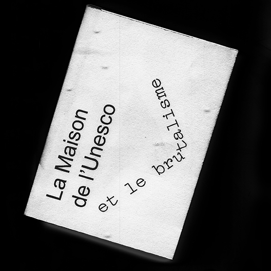

Les styles architecturaux
Ce projet est une collection d'ouvrages architecturaux. Chaque livre raconte un monument en fonction de leur style architectural. Les ouvrages sont des livres de poche accompagnés d'une jaquette et d'un marque-page permettant une lecture en mouvement lors de la visite.
⁂ Die Berliner Philharmoniker et l'expressionisme
⁂ The dancing house et le déconstructivisme
⁂ La maison de l'Unesco et le brutalisme
▷ Font : Arial de Robin Nichola et Patricia Saunders, Compagnon de Juliette Duhé, Léa Pradine, Valentin Papon, Chloé Lozano et Sébastien Riollier
▷ Projet éditorial
▷ Janvier 2022
les styles architecturaux